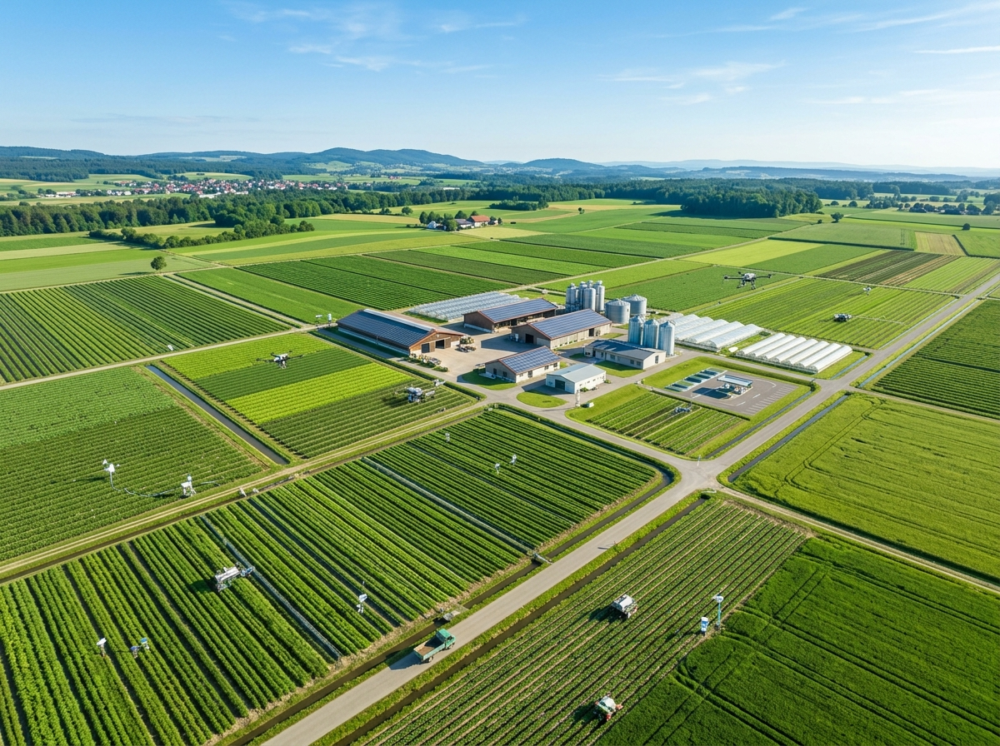
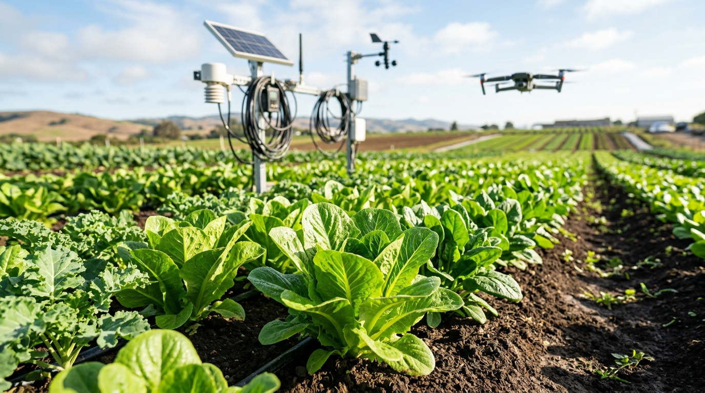
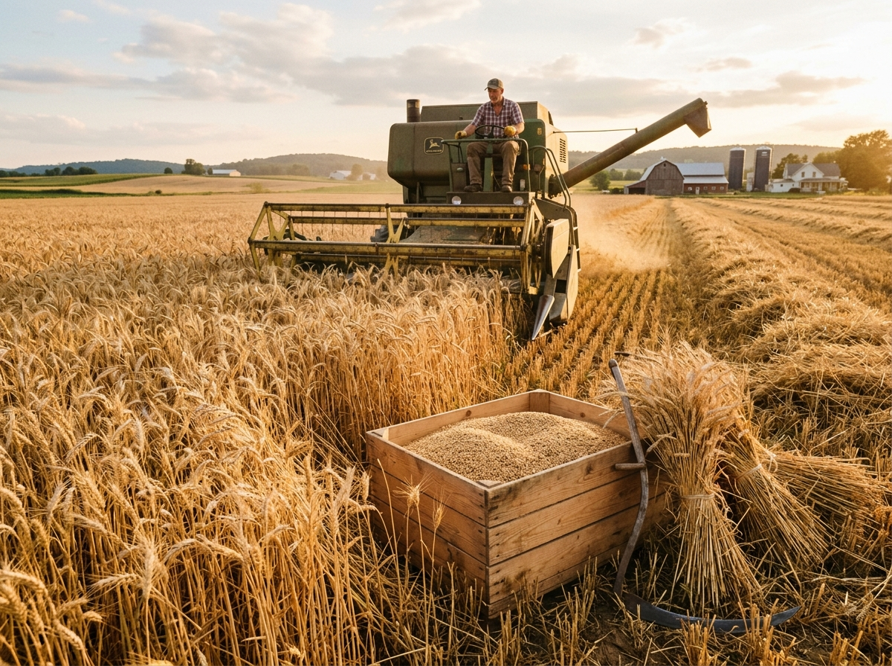
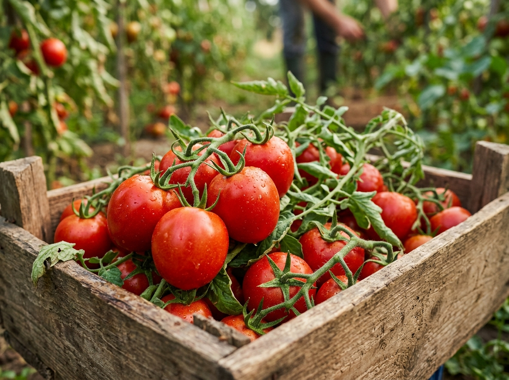

Grow smarter.
Harvest bigger.
AgriSathi unifies AI crop advisory, live IoT field telemetry, hyper-local weather intelligence, and a zero-middleman APMC marketplace into one simple platform.

Agriculture without guesswork.
Traditional farming suffers from unpredictable weather, delayed pest alerts, and fragmented market rates. AgriSathi delivers real-time clarity.
Crop Uncertainty
Spot fungal outbreaks, nutrient deficits, and water stress before visible damage occurs.
Weather Volatility
Hyper-local micro-climate forecasts safeguard spraying windows and harvesting schedules.
Resource Wastage
Precision fertigation and automated drip schedules save up to 25% water and fertilizer.
Market Price Gaps
Direct APMC mandi data empowers farmers to negotiate better rates with zero middleman cuts.
Everything your farm needs in one place.
Designed from the ground up for smallholders, progressive agronomists, and farm managers.
Conversational AI Agronomist
Get instant advice in natural language on pest management, irrigation timing, and soil health.
Smart Field Sensing
Satellite multi-spectral index & IoT sensors continuously score crop vigour and disease risk.
Weather Intelligence
Micro-climate radar forecast with automated spraying alerts and rainfall notifications.
Soil Telemetry
Track real-time moisture levels, N-P-K nutrient saturation, pH balance, and soil temperature.
APMC Market Intelligence
Track live commodity prices across Gujarat & Maharashtra mandis to lock in maximum selling profit.
Direct Mandi Marketplace
Connect directly with verified wholesale buyers, retail chains, and food processors.
Meet your digital agronomist.
Ask questions about field telemetry, crop diseases, fertilizer dosage, or mandi price trends.
AgriSathi Intelligence Engine
Online • Telemetry SynchronizedSee your farm at a glance.
Real-time telemetry, IoT ground sensors, satellite index, and yield forecasts consolidated in one view.
Soil Moisture & Ambient Temperature (7-Day Trend)
"Block B Tomato field moisture is at 42%. Heat spike expected at 2:00 PM."
Active Crop Blocks

Detect stress before crops suffer.
Combining satellite optical sensing with IoT soil nodes for early detection of water deficit, pest threat, and nutrient imbalances.
Trade directly. Earn full value.
Discover live mandi rates, list your harvested crops, and deal directly with verified agricultural buyers.

₹2,450 / qtlSharbati Wheat
Vadodara, GJ👨🌾 Listed by: Ramesh Patel (Verified Farmer)

₹1,850 / qtlFresh Organic Tomatoes
Ahmedabad, GJ👨🌾 Listed by: Vikram Singh (Verified Farmer)
Long Staple Cotton
Rajkot, GJ👨🌾 Listed by: Kishan Patel (Verified Farmer)
Regional Mandi Price Movements
Updated hourly from national APMC commodities exchange feeds
28°C
Partly CloudyPlan around the weather.
"30% rain probability tomorrow afternoon. Postpone chemical pesticide spraying by 24 hours to avoid rain wash-off. Soil humidity levels will support wheat grain growth."
Start farming smarter in four steps.
No complex hardware required. Setup your field profile directly from your smartphone.
Create your farm profile
Select field location, acreage, crop varieties, and sowing dates in under 2 minutes.
Sync field telemetry
Connect satellite multi-spectral streams or ground IoT sensor nodes.
Get AI insights
Receive proactive push alerts for irrigation timing, disease warnings, and weather risks.
Execute & trade
Save water, reduce input costs, optimize crop yield, and sell directly on the marketplace.
Empowering farmers with technology that delivers results.
Field statistics compiled across pilot deployments in Gujarat & Maharashtra.
Farmers Supported
Water Savings
Higher Crop Yield
Telemetry & Support
Trusted by progressive growers.
See how AgriSathi transformed daily farm management and crop profitability.
"AgriSathi makes field telemetry so simple to understand. The soil moisture alerts saved my tomato crop during the last heatwave."
"The AI assistant is like having a veteran agronomist on speed dial. Asking questions in simple terms cut my fertilizer costs by 20%."
"Selling my cotton crop on AgriSathi Marketplace bypassed trader commissions. I gained ₹300 higher per quintal directly from a Rajkot textile buyer."
Your farm is ready for precision AI.
Bring live telemetry, satellite analytics, and direct market access to your crops today.